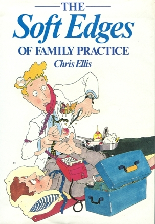

The Soft Edges of Family Practice
THE SOFT EDGES OF FAMILY PRACTICE by Chris Ellis is unfortunately out of print. The third printing is now sold out.
Articles from the Soft Edges and Despatches from the Last Outpost were selected for Laugh the Beloved Country (published by Double Story, Cape Town) which is an anthology of South African humour. It is available from Exclusive Books .

Critic’s comments on “The Soft Edges of Family Practice”
“Writing humorous material is by no means easy but this writer has the recipe to the last ingredient”.
- The Argus
“Delightful moments in the life of a quite ordinary person who happens to be a doctor”
- Pretoria News
“A talent for combining medical humour with compassion”
- Cape Times
“There is more than humour. There are heart warming encounters with people in distress”
- S A Family Practice
“Underlying all his pieces are the very serious problems which can beset a general practitioner”.
- Talking of Books
“This one is a gem. Do yourself a favour by reading it again and again”
- South African Medical Journal